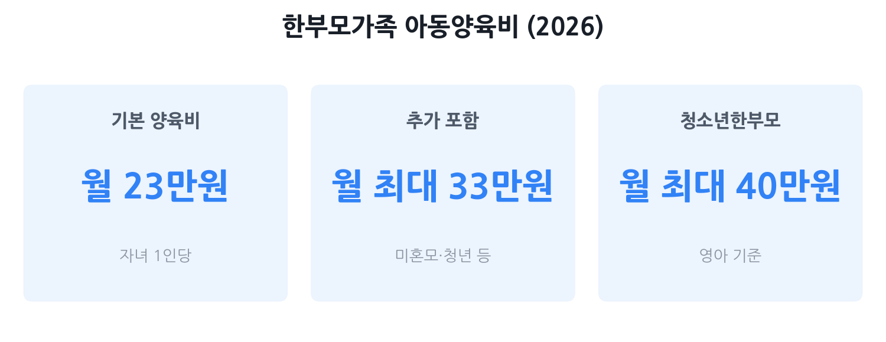

한부모가족 지원금 총정리 2026
— 자격·금액·함정을 한 번에
2026년 한부모가족 지원은 소득기준이 중위소득 63%에서 65%로 확대됐습니다. 아동양육비 기본 월 23만 원, 조건 충족 시 최대 월 33만 원, 청소년한부모라면 월 37~40만 원까지 받을 수 있어요. 이 글은 "내가 자격이 되는지", "얼마를 받는지", "어디서 신청하는지"를 빠르게 확인하는 데 집중합니다.
- 이혼·사별·미혼 등으로 혼자 아이를 키우고 있는 부 또는 모
- 소득이 애매해서 "나는 자격이 될까?" 모르는 분
- 한부모가족 vs 청소년한부모 차이가 헷갈리는 분
- 한부모 지원과 다른 복지(기초생활·차상위·교육급여)를 중복으로 받을 수 있는지 궁금한 분

한부모가족이란? — 자격 요건 기본
한부모가족지원법상 한부모가족은 "모 또는 부와 만 18세 미만 자녀"로 구성된 가족을 말합니다. 이혼·사별·미혼·유기 등 사유를 가리지 않습니다. 자녀가 취학 중이라면 만 22세 미만까지 기준을 적용합니다. 조손가족(외)조부모가 손자녀를 양육하는 경우도 동일하게 지원됩니다.
크게 두 유형으로 구분됩니다.
- 일반 한부모가족 — 부 또는 모가 만 25세 이상인 경우
- 청소년한부모가족 — 부 또는 모가 만 24세 이하인 경우 (더 높은 소득기준 + 추가 지원 적용)
2026년 소득기준 — 내가 해당되나?
소득기준은 소득인정액이 기준 중위소득의 일정 비율 이하인지로 판단합니다. 소득인정액은 단순한 월 소득이 아니라, 근로·사업소득과 재산을 소득으로 환산한 금액을 합산한 값입니다. 근로·사업소득은 30% 공제 후 산정되므로, 월급이 기준보다 조금 높아도 통과될 수 있습니다(만 24세 이하는 40만 원 선공제 후 30% 추가 공제 적용).
2026년 소득기준 한눈에 보기
| 구분 | 소득 기준 | 2인 가구 월 기준 | 3인 가구 월 기준 | 4인 가구 월 기준 |
|---|---|---|---|---|
| 일반 한부모·조손가족 복지급여 지급 + 증명서 발급 |
중위소득 65% 이하 | 약 273만 원 | 약 348만 원 | 약 422만 원 |
| 청소년한부모 증명서 발급 기준 |
중위소득 72% 이하 | 약 302만 원 | 약 386만 원 | 약 468만 원 |
| 청소년한부모 복지급여 지급 기준 |
중위소득 65% 이하 | 약 273만 원 | 약 348만 원 | 약 422만 원 |
| 한부모가족복지시설 입소 | 중위소득 100% 이하 | 약 420만 원 | 약 536만 원 | 약 649만 원 |
출처: 엔젤시터·2026 성평등가족부 한부모가족지원사업 안내 지침. 2026년 기준 중위소득은 4인 가구 기준 649만 4,738원(전년 대비 6.51% 인상)입니다.
지원 내용 총정리 — 아동양육비·학용품비·생활보조금
소득기준을 충족하는 일반 한부모가족에게 지급되는 주요 급여를 정리합니다. 청소년한부모(만 24세 이하)는 아래와 다른 별도 금액이 적용됩니다(4번 섹션 참조).
| 지원 항목 | 지원 금액 (2026년) | 대상 |
|---|---|---|
| 아동양육비 (기본) | 자녀 1인당 월 23만 원 | 중위소득 65% 이하, 만 18세 미만 자녀 |
| 추가 아동양육비 | 기본 23만 원 + 월 10만 원 추가 = 최대 월 33만 원 |
중위소득 63% 이하 중 ①미혼모·부·조손가족의 만 5세 이하 자녀 또는 ②청년한부모(25~34세)의 자녀 |
| 학용품비 | 자녀 1인당 연 10만 원 | 초·중·고등학교 재학 자녀 |
| 생활보조금 | 가구당 월 10만 원 (2026년 5만→10만 원 2배 인상) |
한부모가족 복지시설에 입소한 가구 (생계급여 수급 가구 제외) |
| 무료 법률구조 | 법률 상담·소송 대리 무료 | 중위소득 125% 이하 한부모가족 (양육비 청구·이혼 소송 등) |
| LH 매입임대주택 | 시세보다 저렴한 임대 | 한부모가족 (346가구 지원, 2026년 확대) |
양육비 선지급 제도도 알아두세요
전 배우자가 양육비를 지급하지 않는 경우, 정부가 먼저 지급하고 나중에 채무자에게 회수하는 양육비 선지급 제도가 운영됩니다. 2026년에는 간편인증서비스가 도입돼 신청이 편해졌습니다. 문의·신청은 양육비이행관리원(☎ 1899-7290, www.childsupport.or.kr).
청소년한부모 별도 지원 — 만 24세 이하라면 더 받는다
부 또는 모가 만 24세 이하인 경우 '청소년한부모가족'으로 분류되어 더 높은 지원을 받습니다. 이 경우 소득기준도 넓어서 증명서 발급은 중위소득 72% 이하, 급여 지급은 중위소득 65% 이하입니다.
| 지원 항목 | 청소년한부모 금액 | 비고 |
|---|---|---|
| 아동양육비 (영아 0~1세) | 1인당 월 40만 원 | 일반 한부모보다 월 17만 원 높음 |
| 아동양육비 (만 2세 이상) | 1인당 월 37만 원 | 일반 한부모보다 월 14만 원 높음 |
| 검정고시 학습비 | 실비 지원 | 학업을 중단한 청소년한부모 대상 |
| 고교생 교육비 | 실비 지원 | 재학 중인 경우 |
| 자립 지원 상담 | 사례관리 서비스 | 자립 역량 강화 프로그램 연계 |
다른 복지와 중복 가능한가?
한부모가족 지원은 여러 다른 복지제도와 중복 수급이 가능한 경우가 많습니다. 특히 아래 항목은 꼭 함께 확인하세요.
- 기초생활보장 생계급여 + 아동양육비: 중복 수령 가능합니다. 2021년 이후 중복 수급이 허용됐습니다. 단, 생계급여 수급 가구는 복지시설 생활보조금은 제외됩니다.
- 차상위계층 확인서 + 아동양육비: 중복 신청 가능합니다. 소득기준이 각각 다르게 산정되므로 두 가지 모두 신청해 두세요.
- 교육급여(기초생활) + 학용품비: 중복 가능합니다. 교육급여를 받더라도 한부모 학용품비(연 10만 원)를 별도로 신청하세요.
- 아동수당(만 8세 미만): 소득 무관하게 지급되므로 한부모 아동양육비와 중복 수령 가능합니다.
- 양육비이행관리원 선지급: 한부모가족 아동양육비와 별개로 신청 가능합니다. 전 배우자의 양육비 미지급 시 추가로 받을 수 있습니다.
신청 방법 — 복지로·주민센터·한부모가족증명서
온라인 신청
복지로(www.bokjiro.go.kr) → 서비스 신청 → '한부모가족 아동양육비'를 검색해 신청합니다. 신청 전 복지로 자가진단 서비스로 소득인정액을 먼저 확인해 보면 좋습니다.
오프라인 신청
주소지 관할 읍·면·동 행정복지센터(주민센터)를 방문해 신청합니다. 현장에 비치된 사회보장급여 신청서, 소득·재산 신고서, 금융정보 제공 동의서를 작성하면 됩니다.
신청 시 필요 서류
- 사회보장급여 신청서 (현장 비치 또는 온라인 작성)
- 소득·재산 신고서
- 금융정보 등 제공 동의서
- 가족관계증명서, 주민등록등본
한부모가족증명서 발급 방법
한부모가족증명서는 정부24(gov.kr) 온라인 또는 주민센터 방문으로 발급받을 수 있습니다. 소득기준(일반 65%, 청소년한부모 72%) 충족 여부를 심사한 뒤 발급됩니다. 유효기간이 있으므로 사용 목적이 생기면 갱신하는 걸 잊지 마세요.
흔한 함정 5가지
- ① 소득인정액 ≠ 월급. 재산(자동차·금융자산 등)도 소득으로 환산해 합산합니다. 월급은 기준 이하여도 재산이 많으면 탈락할 수 있습니다. 복지로 모의계산기로 미리 확인하세요.
- ② 전 배우자에게 받는 양육비도 소득으로 잡힙니다. 사적이전소득으로 소득인정액에 포함됩니다. 양육비를 받는 금액이 클수록 실질 소득인정액이 높아집니다.
- ③ 사실혼·동거 상태면 지원이 중단될 수 있습니다. 주민등록상 별도 세대라도 실제로 파트너와 함께 생활하는 것이 확인되면 한부모가족 지위가 취소됩니다.
- ④ 소득 변동 미신고 시 환수 대상이 됩니다. 취업, 급여 인상, 재혼 등 소득·가족 상황이 바뀌면 즉시 주민센터에 신고해야 합니다. 미신고는 부정수급으로 간주돼 지원금을 돌려줘야 합니다.
- ⑤ 추가 아동양육비 기준을 놓치기 쉽습니다. 기본 양육비(65%)는 받아도 추가 10만 원(63% 기준)을 신청하지 않는 경우가 많습니다. 미혼모·부·조손가족이나 청년한부모(25~34세)라면 추가 지원 신청 여부를 반드시 확인하세요.
자주 묻는 질문
Q. 소득기준은 어떻게 계산하나요?
소득인정액은 근로·사업소득과 재산의 소득환산액을 합산한 금액입니다. 근로·사업소득은 30% 공제 후 계산하므로 월급이 기준보다 다소 높아도 통과될 수 있습니다. 복지로(bokjiro.go.kr) 모의계산 서비스에서 대략적인 소득인정액을 미리 확인해 보세요.
Q. 아이가 고등학교를 졸업하면 지원이 끊기나요?
기본적으로 자녀가 만 18세가 되면 종료되지만, 재학 중인 경우 만 22세까지 연장됩니다. 대학 진학 후에도 재학 상태가 증명되면 지원이 이어집니다.
Q. 기초생활 생계급여를 이미 받고 있는데 한부모 아동양육비도 받을 수 있나요?
네, 중복 수령 가능합니다. 2021년 이후 한부모가족 아동양육비와 기초생활보장 생계급여의 동시 수급이 허용됩니다. 두 가지 모두 신청하세요.
Q. 미혼부도 한부모가족으로 인정받나요?
네, 인정됩니다. 한부모가족지원법은 성별을 가리지 않으며, 미혼부가 자녀를 단독으로 양육하는 경우 한부모가족으로 인정받을 수 있습니다. 가족관계증명서 등으로 양육 사실을 확인하면 됩니다.
Q. 한부모가족증명서는 어디에 쓰나요?
아동양육비 신청 외에도 전기요금·통신비 감면, 문화누리카드 우선 발급, 각종 지자체 별도 지원, 공공임대주택 우선 입주 자격 등에 활용됩니다. 정부24(gov.kr) 또는 주민센터에서 무료 발급합니다.
본 글은 성평등가족부 '2026년 한부모가족지원사업 안내 지침', 보건복지부 2026년 기준 중위소득 고시, 복지로(bokjiro.go.kr), 찾기쉬운 생활법령정보(easylaw.go.kr) 등 공개 자료를 바탕으로 작성됐습니다. 소득인정액 산정 방식·지원 금액은 개인별 상황에 따라 달라질 수 있으므로, 신청 전 반드시 주민센터 또는 복지로에서 최종 조건을 확인하시기 바랍니다. 본 페이지는 정보 제공 목적이며 특정 수령액을 보장하지 않습니다.